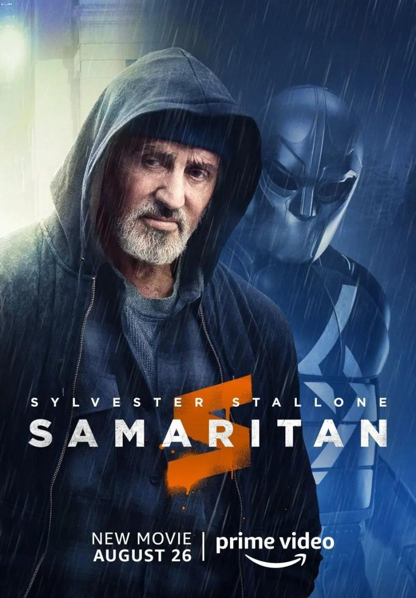

Samaritan:
Seguimos los pasos de un joven que descubre que el superhéroe al que todos admiraban, y al que creían muerto, podría seguir vivo.
Descripción:
Sam Cleary, un joven de 13 años, sospecha que su misterioso y solitario vecino, el Sr. Smith, es en realidad un personaje legendario que se esconde a plena vista. Hace 20 años, el vigilante superpoderoso de Granite City, Samaritan, fue declarado muerto tras una batalla en un almacén con su rival, Némesis.